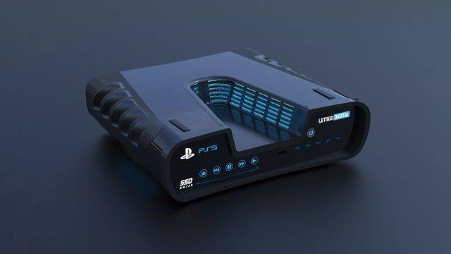

Play Station
PlayStation Network , abreviado como PSN , es una plataforma desarrollada por Sony Computer
Entertainment para la venta de contenidos digitales y el soporte del juego en línea accesible
mediante los sistemas PlayStation 3, PSP, PlayStation 4, PS Vita y PlayStation Vita TV
(PlayStation TV) así como desde la web PlayStation.com. Desde el 2019 hay más de 94 millones
de usuarios registrados en PlayStation Network en todo el mundo.

Play Station 5
Conforme pasan los días más detalles vamos conociendo de la nueva PlayStation 5, consola que
pinta para ser una de las mejores de Sony en su historia, y la cual por obvias razones será
incluso la consola más poderosa del fabricante japonés.
Y en esta ocasión se han publicado datos concretos del poder que tendrá el procesador de la PlayStation 5,
el cual será construido por AMD.
Sabemos que la PS5 vendrá con un procesador Ryzen Zen 2 de 7nm con 8 núcleos y 16 hilos corriendo
a 3.2 GHz, el cual para entender el por qué es tan poderoso y por qué decimos que el salto entre
una generación y otra es enorme, es porque el procesador de la PS4 es un AMD x86 con microarquitectura
Jaguar de 28nm y 8 núcleos a 1.6 GHz, mientras que el del PS4 Pro es exactamente el mismo, pero con una
velocidad de reloj de 2.13 GHz.
Estamos hablando de que la arquitectura del nuevo procesador ha avanzado tanto que ni siquiera
baja a la mitad de nanómetros (que serían 14 nanómetros), sino que se reduce en más del doble,
ya que tendremos un procesador construido bajo los 7 nanómetros que además tiene una potencia
de 3.2 GHz, lo que significa que será un 60% más poderoso que el procesador del PS4, y un 40%
más potente que el de la versión Pro.
Pero es justamente parte de este poder con el que se habla de que esta consola eliminará los
tiempos de carga de los juegos, incluirá Ray Tracing y podrá correr juegos hasta en 8K, aunque
es probable que la mayoría de los títulos de PS5 vengan en 4K pero se haga un reescalado a 8K
en los equipos compatibles con este formato.
